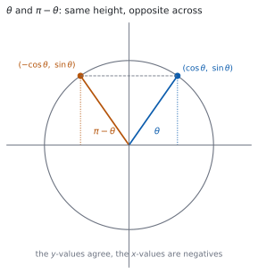
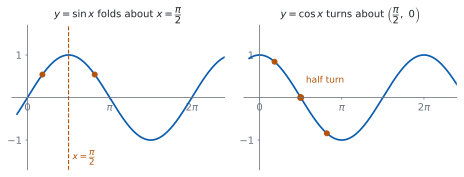

HL 3.11 — Relationships between trigonometric functions and symmetry（三角関数の関係式とグラフの対称性）
- \(\sin(\pi-\theta)\)、\(\cos(\pi-\theta)\)、\(\tan(\pi-\theta)\) を書ける。
- これらを単位円からも加法定理からも導ける。
- \(\sin(-\theta)\)、\(\cos(-\theta)\)、\(\tan(-\theta)\) を、奇関数・偶関数の言葉で言える。
- \(\pi\) や \(\dfrac{\pi}{2}\) をずらしたときの関係を使える。
- 同じことを、グラフの対称性として説明できる。
- \(1\) つの三角比の値から、関係する角の値をすべて出せる。
The idea
1. The unit circle behind the relationships（単位円から読む）

シラバスは、\(1\) 行です。
Relationships between trigonometric functions and the symmetry properties of their graphs.
単位円の上で、角 \(\theta\) の点は \((\cos\theta,\ \sin\theta)\) です（SL 3.5）。シラバスも、そのつながりを書いています。
Link to: the unit circle (SL3.5), odd and even functions (AHL2.14), compound angles (AHL3.10).
図 1 のとおり、\(\pi-\theta\) の点は、\(\theta\) の点を \(y\) 軸について折り返したものです。ですから
\[ (\text{$\pi-\theta$ の点}) = (-\cos\theta,\ \sin\theta) \]
です。\(y\) 座標はそのまま、\(x\) 座標だけ符号が変わります。
覚える式はありません。単位円の図を \(1\) つかけば、その場で読めます。
\(\theta\) の点をかいて、聞かれている角の点がどこに移るかを見てください。
2. The three relationships for \(\pi-\theta\)（\(\pi-\theta\) の \(3\) つの関係）
Guidance は、\(3\) つを書いています。
\(\sin(\pi - \theta) = \sin\theta\)
\(\cos(\pi - \theta) = -\cos\theta\)
\(\tan(\pi - \theta) = -\tan\theta\)
\[ \sin(\pi-\theta) = \sin\theta \tag{1}\]
\[ \cos(\pi-\theta) = -\cos\theta \tag{2}\]
\[ \tan(\pi-\theta) = -\tan\theta \tag{3}\]
\(\sin\) だけが符号を変えません。 \(y\) 座標が \(\sin\) だからです（第 1 節）。
\(\tan\) は \(\dfrac{\sin}{\cos}\) なので、分母だけ符号が変わって、全体が負になります。
3. Deriving them from the compound angle identities（加法定理から導く）
図を使わずに、式だけでも出せます（HL 3.10）。
\[ \sin(\pi-\theta) = \sin\pi\cos\theta - \cos\pi\sin\theta \]
\(\sin\pi = 0\)、\(\cos\pi = -1\) なので
\[ = 0 \cdot \cos\theta - (-1)\sin\theta = \sin\theta \]
です。\(\cos\) も同じようにできます。
\[ \cos(\pi-\theta) = \cos\pi\cos\theta + \sin\pi\sin\theta = -\cos\theta \]
\(\sin\pi = 0\) と \(\cos\pi = -1\) を入れるだけです。どちらの道でも、同じ式が出ます。
4. Negative angles: odd and even（負の角：奇関数と偶関数）
\(-\theta\) の点は、\(\theta\) の点を\(x\) 軸について折り返したものです。ですから
\[ \sin(-\theta) = -\sin\theta, \qquad \cos(-\theta) = \cos\theta, \qquad \tan(-\theta) = -\tan\theta \tag{4}\]
です。これは、\(\sin\) と \(\tan\) が奇関数、\(\cos\) が偶関数だと言っているのと同じです（HL 2.14）。
| 関数 | \(f(-x)\) | 種類 | グラフ |
|---|---|---|---|
| \(\sin\) | \(-\sin x\) | odd | 原点について点対称 |
| \(\cos\) | \(\cos x\) | even | \(y\) 軸について線対称 |
| \(\tan\) | \(-\tan x\) | odd | 原点について点対称 |
5. Shifting by \(\pi\) and by \(\dfrac{\pi}{2}\)（\(\pi\) と \(\dfrac{\pi}{2}\) のずらし）
\(\pi\) を足すと、単位円の点は原点について反対側に移ります。両方の座標の符号が変わるので
\[ \sin(\pi+\theta) = -\sin\theta, \qquad \cos(\pi+\theta) = -\cos\theta, \qquad \tan(\pi+\theta) = \tan\theta \tag{5}\]
です。\(\tan\) だけ、符号が戻ります。 分子と分母の両方が負になるからです。\(\tan\) の周期が \(\pi\) であることが、ここに現れています。
\(\dfrac{\pi}{2}\) のずらしでは、\(\sin\) と \(\cos\) が入れかわります。
\[ \sin\left(\frac{\pi}{2}-\theta\right) = \cos\theta, \qquad \cos\left(\frac{\pi}{2}-\theta\right) = \sin\theta \tag{6}\]
\[ \sin\left(\frac{\pi}{2}+\theta\right) = \cos\theta, \qquad \cos\left(\frac{\pi}{2}+\theta\right) = -\sin\theta \tag{7}\]
どの関係式も、具体的な角を \(1\) つ入れれば確かめられます。
\(\cos\left(\dfrac{\pi}{2}+\dfrac{\pi}{6}\right) = \cos\dfrac{2\pi}{3} = -\dfrac{1}{2}\) で、\(-\sin\dfrac{\pi}{6} = -\dfrac{1}{2}\) ✓ 合っています。
符号を \(1\) つ覚えまちがえても、\(20\) 秒で見つかります。
6. The same facts read off the graphs（グラフの対称性として読む）

図 2 の左は \(y = \sin x\) です。\(x = \dfrac{\pi}{2}\) について線対称になっています。
\(\dfrac{\pi}{2}\) から左右に同じだけ離れた \(2\) 点、つまり \(\dfrac{\pi}{2}-a\) と \(\dfrac{\pi}{2}+a\) で、高さが同じです。\(\theta = \dfrac{\pi}{2}-a\) と置くと \(\pi-\theta = \dfrac{\pi}{2}+a\) なので、これは 式 1 そのものです。
右は \(y = \cos x\) です。点 \(\left(\dfrac{\pi}{2},\ 0\right)\) について点対称です。半回転すると重なるので、\(\dfrac{\pi}{2}\) から左右に同じだけ離れた \(2\) 点で、値の符号が逆になります。これが 式 2 です。
式と図は、同じことの別の見方です。
7. Using the relationships（使い方）
よく出るのは、\(1\) つの値から、関係する角の値を書く問題です。
\(\sin\dfrac{\pi}{5} = p\) とします。すると
- \(\sin\dfrac{4\pi}{5} = \sin\left(\pi-\dfrac{\pi}{5}\right) = p\)（式 1）
- \(\sin\dfrac{6\pi}{5} = \sin\left(\pi+\dfrac{\pi}{5}\right) = -p\)（式 5）
- \(\cos\dfrac{3\pi}{10} = \cos\left(\dfrac{\pi}{2}-\dfrac{\pi}{5}\right) = p\)（式 6）
です。まず、与えられた角との関係を式で書くのが手順です。
\[ \text{角を } \pi-\theta,\ \pi+\theta,\ \frac{\pi}{2}\pm\theta \text{ のどれかの形に直す} \tag{8}\]
TI-Nspire CX II で \(\sin(\pi - 0.7)\) と \(\sin(0.7)\) を計算すると、どちらも同じ値になります。関係式を覚えまちがえていないかの確かめに使えます。
RAD になっているかを、必ず見てください。度のままだと \(\pi\) が \(3.14^{\circ}\) として扱われます。
ただし、in terms of $p$ と書かれた問題では、電卓は答えになりません。 \(p\) を使った式で答える必要があります。
Paper 1 では使えません。 このページの例題と演習は、すべて手で解けるようにしてあります。
Why it works
単位円から読む
角 \(\theta\) の点を \(P\) とします。\(P = (\cos\theta,\ \sin\theta)\) です。
\(\pi - \theta\) の点は、\(P\) を \(y\) 軸について折り返した点です。正の \(x\) 軸から測って \(\pi-\theta\) の向きは、\(\pi\) の向き（負の \(x\) 軸）から \(\theta\) だけ戻った向きだからです。
折り返しは \(x\) 座標の符号だけを変えるので、その点は \((-\cos\theta,\ \sin\theta)\) です。座標がそのまま \(\cos\) と \(\sin\) の値なので、式 1 と 式 2 が読めます。
\(\tan\) は \(\dfrac{y}{x}\) なので
\[ \tan(\pi-\theta) = \frac{\sin\theta}{-\cos\theta} = -\tan\theta \]
です。\(3\) つとも、\(1\) つの図から出ます。
\(\pi\) を足すと、なぜ \(\tan\) だけ戻るのか
\(\pi\) を足すと、点は原点について反対側に移り、両方の座標の符号が変わります。
\[ \tan(\pi+\theta) = \frac{-\sin\theta}{-\cos\theta} = \frac{\sin\theta}{\cos\theta} = \tan\theta \]
負が \(2\) つで消えます。 ですから \(\tan\) の周期は \(\pi\) で、\(\sin\) や \(\cos\) の \(2\pi\) の半分です。
\(\dfrac{\pi}{2}\) のずらしで、なぜ入れかわるのか
直角三角形で考えると分かりやすいです。\(2\) つの鋭角は足して \(\dfrac{\pi}{2}\) になります。
角 \(\theta\) から見た対辺は、角 \(\dfrac{\pi}{2}-\theta\) から見れば隣辺です。ですから
\[ \sin\theta = \frac{\text{対辺}}{\text{斜辺}} = \cos\left(\frac{\pi}{2}-\theta\right) \]
です。\(\cos\) の co は complementary（余角）から来ています。 「\(\cos\) は余角の \(\sin\)」という意味です。
グラフの対称性との対応
式 1 で \(\theta = \dfrac{\pi}{2}-a\) と置くと
\[ \pi - \theta = \pi - \frac{\pi}{2} + a = \frac{\pi}{2}+a \]
なので、式は
\[ \sin\left(\frac{\pi}{2}+a\right) = \sin\left(\frac{\pi}{2}-a\right) \]
になります。これは「\(x = \dfrac{\pi}{2}\) から左右に同じだけ離れた \(2\) 点で、値が等しい」という意味で、線対称そのものです。
式 2 で同じ置きかえをすると
\[ \cos\left(\frac{\pi}{2}+a\right) = -\cos\left(\frac{\pi}{2}-a\right) \]
で、値の符号が逆になります。これは点 \(\left(\dfrac{\pi}{2},\ 0\right)\) についての点対称です（HL 2.14）。
Worked examples
問題文は英語です。意味が理解できなかったら、問題文の下の「日本語訳」を開いてください。解説は日本語です。
例題も演習も、すべて電卓なしで解けます。 Paper 1 のつもりで解いてください。
例題 1 Use the compound angle identities to show that \(\sin(\pi-\theta) = \sin\theta\) and that \(\cos(\pi-\theta) = -\cos\theta\).
日本語訳
加法定理を使って、\(\sin(\pi-\theta) = \sin\theta\) と \(\cos(\pi-\theta) = -\cos\theta\) を示しなさい。
\(\sin(A-B)\) の形に当てはめます（HL 3.10）。\(A = \pi\)、\(B = \theta\) です。
\[ \sin(\pi-\theta) = \sin\pi\cos\theta - \cos\pi\sin\theta \]
\(\sin\pi = 0\)、\(\cos\pi = -1\) を入れます。
\[ = 0 \cdot \cos\theta - (-1)\sin\theta = \sin\theta \]
\(\cos\) も同じです。\(\cos(A-B)\) の右辺は \(+\) です（HL 3.10）。
\[ \cos(\pi-\theta) = \cos\pi\cos\theta + \sin\pi\sin\theta = -\cos\theta + 0 = -\cos\theta \]
検算。 \(\theta = \dfrac{\pi}{3}\) で確かめます。 \(\sin\dfrac{2\pi}{3} = \dfrac{\sqrt{3}}{2} = \sin\dfrac{\pi}{3}\) ✓
検算（\(\cos\) のほう）。 \(\cos\dfrac{2\pi}{3} = -\dfrac{1}{2}\) で、\(-\cos\dfrac{\pi}{3} = -\dfrac{1}{2}\) ✓ 符号が逆になっています。
\[\sin(\pi-\theta) = \sin\pi\cos\theta-\cos\pi\sin\theta = 0\cdot\cos\theta-(-1)\sin\theta = \sin\theta\]
\[\cos(\pi-\theta) = \cos\pi\cos\theta+\sin\pi\sin\theta = (-1)\cos\theta+0\cdot\sin\theta = -\cos\theta\]
例題 2 Let \(\alpha\) be an angle with \(\sin\alpha = \dfrac{2}{3}\) and \(\dfrac{\pi}{2} < \alpha < \pi\).
(a) Find the exact value of \(\cos\alpha\).
(b) Find the exact value of \(\sin(\pi-\alpha)\).
(c) Find the exact value of \(\cos(\pi+\alpha)\).
日本語訳
\(\sin\alpha = \dfrac{2}{3}\)、\(\dfrac{\pi}{2} < \alpha < \pi\) とします。
(a) \(\cos\alpha\) の正確な値を求めなさい。
(b) \(\sin(\pi-\alpha)\) の正確な値を求めなさい。
(c) \(\cos(\pi+\alpha)\) の正確な値を求めなさい。
(a) \(\cos^{2}\alpha = 1 - \dfrac{4}{9} = \dfrac{5}{9}\) なので \(\cos\alpha = \pm\dfrac{\sqrt{5}}{3}\) です。
\(\alpha\) は第 \(2\) 象限の角なので、\(\cos\) は負です。
\[ \cos\alpha = -\frac{\sqrt{5}}{3} \]
(b) 式 1 から、そのままです。
\[ \sin(\pi-\alpha) = \sin\alpha = \frac{2}{3} \]
(c) 式 5 から
\[ \cos(\pi+\alpha) = -\cos\alpha = \frac{\sqrt{5}}{3} \]
検算。 \(\sin^{2}+\cos^{2} = 1\) で確かめます。 \(\dfrac{4}{9} + \dfrac{5}{9} = 1\) ✓
検算（象限で）。 \(\pi + \alpha\) は \(\pi\) と \(\dfrac{3\pi}{2}\) のあいだ、つまり第 \(3\) 象限…ではありません。\(\alpha\) が \(\dfrac{\pi}{2}\) と \(\pi\) のあいだなので、\(\pi+\alpha\) は \(\dfrac{3\pi}{2}\) と \(2\pi\) のあいだで、第 \(4\) 象限です。第 \(4\) 象限では \(\cos\) が正 ✓ 答えが正であることと合っています。
(a) \(\cos^{2}\alpha = 1-\dfrac{4}{9} = \dfrac{5}{9}\), and \(\alpha\) is in the second quadrant, so
\[\cos\alpha = -\frac{\sqrt{5}}{3}\]
(b) \(\sin(\pi-\alpha) = \sin\alpha = \dfrac{2}{3}\)
(c) \(\cos(\pi+\alpha) = -\cos\alpha = \dfrac{\sqrt{5}}{3}\)
例題 3 Let \(\sin\dfrac{\pi}{5} = p\). Write each of the following in terms of \(p\).
(a) \(\sin\dfrac{4\pi}{5}\)
(b) \(\sin\dfrac{6\pi}{5}\)
(c) \(\cos\dfrac{3\pi}{10}\)
日本語訳
\(\sin\dfrac{\pi}{5} = p\) とします。次のそれぞれを \(p\) で表しなさい。
まず、\(\dfrac{\pi}{5}\) との関係を式で書きます（式 8）。
(a) \(\dfrac{4\pi}{5} = \pi - \dfrac{\pi}{5}\) です。
\[ \sin\frac{4\pi}{5} = \sin\left(\pi-\frac{\pi}{5}\right) = \sin\frac{\pi}{5} = p \]
(b) \(\dfrac{6\pi}{5} = \pi + \dfrac{\pi}{5}\) です。
\[ \sin\frac{6\pi}{5} = -\sin\frac{\pi}{5} = -p \]
(c) \(\dfrac{3\pi}{10} = \dfrac{5\pi - 2\pi}{10} = \dfrac{\pi}{2} - \dfrac{\pi}{5}\) です。
\[ \cos\frac{3\pi}{10} = \cos\left(\frac{\pi}{2}-\frac{\pi}{5}\right) = \sin\frac{\pi}{5} = p \]
検算。 象限で符号を見ます。 \(\dfrac{4\pi}{5}\) は第 \(2\) 象限なので \(\sin\) は正 ✓ \(\dfrac{6\pi}{5}\) は第 \(3\) 象限なので \(\sin\) は負 ✓
検算（(c) の角）。 \(\dfrac{3\pi}{10}\) は \(\dfrac{\pi}{2}\) より小さいので第 \(1\) 象限、\(\cos\) は正 ✓ \(p\) は正なので、合っています。
(a) \(\dfrac{4\pi}{5} = \pi-\dfrac{\pi}{5}\), so \(\sin\dfrac{4\pi}{5} = \sin\dfrac{\pi}{5} = p\).
(b) \(\dfrac{6\pi}{5} = \pi+\dfrac{\pi}{5}\), so \(\sin\dfrac{6\pi}{5} = -\sin\dfrac{\pi}{5} = -p\).
(c) \(\dfrac{3\pi}{10} = \dfrac{\pi}{2}-\dfrac{\pi}{5}\), so \(\cos\dfrac{3\pi}{10} = \sin\dfrac{\pi}{5} = p\).
例題 4 Explain, using the graph of \(y = \cos x\), why \(\cos(\pi-\theta) = -\cos\theta\).
日本語訳
\(y = \cos x\) のグラフを使って、\(\cos(\pi-\theta) = -\cos\theta\) である理由を説明しなさい。
\(\theta\) と \(\pi-\theta\) は、\(\dfrac{\pi}{2}\) から左右に同じだけ離れています。 \(2\) つの平均が
\[ \frac{\theta + (\pi-\theta)}{2} = \frac{\pi}{2} \]
だからです。
図 2 の右のとおり、\(y = \cos x\) は点 \(\left(\dfrac{\pi}{2},\ 0\right)\) について点対称です。
試験ではこう書く
The two inputs \(\theta\) and \(\pi-\theta\) have mean \(\dfrac{\theta+(\pi-\theta)}{2} = \dfrac{\pi}{2}\), so they are the same distance to the left and to the right of \(x = \dfrac{\pi}{2}\). The graph of \(y = \cos x\) has rotational symmetry of order two about the point \(\left(\dfrac{\pi}{2},\ 0\right)\): a half turn about that point maps the curve onto itself. A half turn about a point on the \(x\)-axis sends the point \(\left(\dfrac{\pi}{2}-a,\ y\right)\) to the point \(\left(\dfrac{\pi}{2}+a,\ -y\right)\), so the two heights are negatives of each other. Writing \(\theta = \dfrac{\pi}{2}-a\), the partner input is \(\dfrac{\pi}{2}+a = \pi-\theta\), and the two heights give \(\cos(\pi-\theta) = -\cos\theta\).
（\(\theta\) と \(\pi-\theta\) は \(\dfrac{\pi}{2}\) から等しく離れていて、\(\cos\) のグラフはそこで点対称なので、高さの符号が逆になる、という意味です。）
検算。 \(\theta = \dfrac{\pi}{3}\) で見ます。 \(\dfrac{\pi}{3}\) と \(\dfrac{2\pi}{3}\) は、\(\dfrac{\pi}{2}\) から \(\dfrac{\pi}{6}\) ずつ離れています ✓
検算（値で）。 \(\cos\dfrac{\pi}{3} = \dfrac{1}{2}\)、\(\cos\dfrac{2\pi}{3} = -\dfrac{1}{2}\) ✓ 符号だけが逆です。
The inputs \(\theta\) and \(\pi-\theta\) are equally spaced either side of \(x = \dfrac{\pi}{2}\), since their mean is \(\dfrac{\pi}{2}\).
The graph of \(y = \cos x\) has a half-turn symmetry about \(\left(\dfrac{\pi}{2},\ 0\right)\), so two inputs equally spaced either side of \(\dfrac{\pi}{2}\) give heights that are negatives of each other.
\[\cos(\pi-\theta) = -\cos\theta\]
Common errors
\(\cos\) はかっこの中を分けられません（HL 3.10）。
加法定理を使うか、単位円をかいてください。 \(\cos\pi - \cos\theta = -1-\cos\theta\) は、まったく別の式です。
\(\cos^{2}\alpha = \dfrac{5}{9}\) から \(\cos\alpha\) を出すときは、\(\alpha\) がどの象限にあるかを見ます（例題 2）。
\(\dfrac{\pi}{2} < \alpha < \pi\) なら \(\cos\) は負です。\(\pm\) のまま答えないでください。
\(\tan(\pi+\theta) = \tan\theta\) です（式 5）。\(\tan\) だけ、符号が戻ります。
分子と分母の両方が負になるからです（Why it works）。
\(\dfrac{\pi}{2}-\theta\) では \(\sin\) と \(\cos\) が入れかわります（式 6）。\(\pi-\theta\) では入れかわりません。
引く数が \(\dfrac{\pi}{2}\) か \(\pi\) かを、先に見てください。
in terms of $p$ と書かれた問題では、\(p\) を使った式が答えです（第 7 節）。
小数を書いても点になりません。まず \(\pi-\theta\) などの形に直してください。
Exercises
各問題に、折りたたみが \(3\) つ付いています。日本語訳、解答例（答案用紙に書くべきこと。英語です）、解説（なぜそうなるか。日本語です）。
まず自分で解いて、次に解答例と見くらべてください。解説は、合わなかったときだけ開けば十分です。
1 Write \(\sin(\pi-\theta)\), \(\cos(\pi-\theta)\) and \(\tan(\pi-\theta)\) in terms of \(\sin\theta\), \(\cos\theta\) and \(\tan\theta\).
日本語訳
\(\sin(\pi-\theta)\)、\(\cos(\pi-\theta)\)、\(\tan(\pi-\theta)\) を、\(\sin\theta\)、\(\cos\theta\)、\(\tan\theta\) で表しなさい。
\[\sin(\pi-\theta) = \sin\theta, \qquad \cos(\pi-\theta) = -\cos\theta, \qquad \tan(\pi-\theta) = -\tan\theta\]
\(\sin\) だけ符号がそのままです（第 2 節）。単位円で、高さが変わらないことから読めます。
検算。 \(\theta = \dfrac{\pi}{4}\) で試します。\(\sin\dfrac{3\pi}{4} = \dfrac{\sqrt{2}}{2} = \sin\dfrac{\pi}{4}\) ✓
検算（\(\tan\) で）。 \(\tan\dfrac{3\pi}{4} = -1\)、\(-\tan\dfrac{\pi}{4} = -1\) ✓
2 Let \(\beta\) be an angle with \(\cos\beta = -\dfrac{1}{4}\) and \(\dfrac{\pi}{2} < \beta < \pi\). Find the exact value of (a) \(\cos(\pi-\beta)\), (b) \(\cos(-\beta)\), (c) \(\cos(\pi+\beta)\).
日本語訳
\(\cos\beta = -\dfrac{1}{4}\)、\(\dfrac{\pi}{2} < \beta < \pi\) とします。(a) \(\cos(\pi-\beta)\)、(b) \(\cos(-\beta)\)、(c) \(\cos(\pi+\beta)\) の正確な値を求めなさい。
(a) \(\cos(\pi-\beta) = -\cos\beta = \dfrac{1}{4}\)
(b) \(\cos(-\beta) = \cos\beta = -\dfrac{1}{4}\)
(c) \(\cos(\pi+\beta) = -\cos\beta = \dfrac{1}{4}\)
(b) は \(\cos\) が偶関数であることを使います（式 4）。符号は変わりません。
- と (c) は、どちらも \(-\cos\beta\) になります。\(\cos\) では、\(\pi-\beta\) と \(\pi+\beta\) が同じ値です。
検算。 \(\cos\) は偶関数なので、\(\cos(\pi-\beta)\) と \(\cos(\beta-\pi)\) も同じです。\(\beta-\pi = -(\pi-\beta)\) ✓
検算（象限で）。 \(\pi-\beta\) は \(0\) と \(\dfrac{\pi}{2}\) のあいだ、つまり第 \(1\) 象限です。\(\cos\) は正 ✓ 答えが \(\dfrac{1}{4} > 0\) と合っています。
3 Let \(\sin\dfrac{\pi}{7} = q\). Write each of the following in terms of \(q\): (a) \(\sin\dfrac{6\pi}{7}\), (b) \(\sin\dfrac{8\pi}{7}\), (c) \(\cos\dfrac{5\pi}{14}\).
日本語訳
\(\sin\dfrac{\pi}{7} = q\) とします。次のそれぞれを \(q\) で表しなさい。(a) \(\sin\dfrac{6\pi}{7}\)、(b) \(\sin\dfrac{8\pi}{7}\)、(c) \(\cos\dfrac{5\pi}{14}\)。
(a) \(\dfrac{6\pi}{7} = \pi-\dfrac{\pi}{7}\), so \(\sin\dfrac{6\pi}{7} = q\).
(b) \(\dfrac{8\pi}{7} = \pi+\dfrac{\pi}{7}\), so \(\sin\dfrac{8\pi}{7} = -q\).
(c) \(\dfrac{5\pi}{14} = \dfrac{7\pi-2\pi}{14} = \dfrac{\pi}{2}-\dfrac{\pi}{7}\), so \(\cos\dfrac{5\pi}{14} = \sin\dfrac{\pi}{7} = q\).
(c) は分母を \(14\) にそろえると見つかります。\(\dfrac{\pi}{2} = \dfrac{7\pi}{14}\)、\(\dfrac{\pi}{7} = \dfrac{2\pi}{14}\) です（例題 3）。
検算。 (a) は第 \(2\) 象限なので \(\sin\) は正 ✓ (b) は第 \(3\) 象限なので負 ✓
検算（和で）。 \(\dfrac{5\pi}{14}+\dfrac{\pi}{7} = \dfrac{5\pi+2\pi}{14} = \dfrac{\pi}{2}\) ✓ 余角の組になっています。
4 Use the compound angle identity to show that \(\cos(\pi+\theta) = -\cos\theta\).
日本語訳
加法定理を使って、\(\cos(\pi+\theta) = -\cos\theta\) を示しなさい。
\[\cos(\pi+\theta) = \cos\pi\cos\theta-\sin\pi\sin\theta = (-1)\cos\theta-0\cdot\sin\theta = -\cos\theta\]
\(\cos(A+B)\) の右辺は \(-\) です（HL 3.10）。\(A = \pi\)、\(B = \theta\) とします。
\(\sin\pi = 0\) なので、\(2\) 項目はいつも消えます。
検算。 \(\theta = 0\) では、左辺 \(\cos\pi = -1\)、右辺 \(-\cos 0 = -1\) ✓
検算（\(\theta = \dfrac{\pi}{3}\) で）。 左辺は \(\cos\dfrac{4\pi}{3} = -\dfrac{1}{2}\)、右辺は \(-\dfrac{1}{2}\) ✓
5 Simplify \(\sin(\pi-\theta)\cos(-\theta) + \cos(\pi-\theta)\sin(-\theta)\).
日本語訳
\(\sin(\pi-\theta)\cos(-\theta) + \cos(\pi-\theta)\sin(-\theta)\) を簡単にしなさい。
\[\sin(\pi-\theta) = \sin\theta, \quad \cos(-\theta) = \cos\theta, \quad \cos(\pi-\theta) = -\cos\theta, \quad \sin(-\theta) = -\sin\theta\]
\[\sin\theta\cos\theta + (-\cos\theta)(-\sin\theta) = 2\sin\theta\cos\theta = \sin 2\theta\]
\(4\) つの部分を、それぞれ書きかえてからかけ算します。\(2\) 項目は負 \(\times\) 負で正になります。
最後は \(2\) 倍角の形です（HL 3.10）。
検算。 \(\theta = \dfrac{\pi}{4}\) で試します。\(\sin\dfrac{3\pi}{4}\cos\dfrac{\pi}{4} + \cos\dfrac{3\pi}{4}\sin\dfrac{\pi}{4} = \dfrac{1}{2}+\dfrac{1}{2} = 1\) で、\(\sin\dfrac{\pi}{2} = 1\) ✓
検算（\(\theta = \dfrac{\pi}{6}\) で）。 \(\sin\dfrac{\pi}{3} = \dfrac{\sqrt{3}}{2}\) で、\(2\sin\dfrac{\pi}{6}\cos\dfrac{\pi}{6} = 2 \times \dfrac{1}{2} \times \dfrac{\sqrt{3}}{2} = \dfrac{\sqrt{3}}{2}\) ✓
6 Show that \(\tan(\pi-\theta) = -\tan\theta\), using \(\tan\theta = \dfrac{\sin\theta}{\cos\theta}\).
日本語訳
\(\tan\theta = \dfrac{\sin\theta}{\cos\theta}\) を使って、\(\tan(\pi-\theta) = -\tan\theta\) を示しなさい。
\[\tan(\pi-\theta) = \frac{\sin(\pi-\theta)}{\cos(\pi-\theta)} = \frac{\sin\theta}{-\cos\theta} = -\frac{\sin\theta}{\cos\theta} = -\tan\theta\]
分子はそのまま、分母だけ符号が変わります。 ですから、全体が負になります（Why it works）。
\(\cos\theta \neq 0\) が要ります。\(\tan\) が定義されている角で考えています。
検算。 \(\theta = \dfrac{\pi}{3}\) では、\(\tan\dfrac{2\pi}{3} = -\sqrt{3}\)、\(-\tan\dfrac{\pi}{3} = -\sqrt{3}\) ✓
検算（\(\theta = \dfrac{\pi}{6}\) で）。 \(\tan\dfrac{5\pi}{6} = -\dfrac{1}{\sqrt{3}}\) ✓
7 Solve \(\sin(\pi-\theta) = \cos\theta\) for \(0 \leq \theta \leq 2\pi\).
日本語訳
\(0 \leq \theta \leq 2\pi\) の範囲で \(\sin(\pi-\theta) = \cos\theta\) を解きなさい。
\[\sin(\pi-\theta) = \sin\theta, \quad \text{so the equation is} \quad \sin\theta = \cos\theta\]
Dividing by \(\cos\theta\) (which is not zero at any solution, since \(\sin\theta\) and \(\cos\theta\) cannot both be zero):
\[\tan\theta = 1, \qquad \theta = \frac{\pi}{4}, \quad \frac{5\pi}{4}\]
左辺を先に書きかえます（式 1）。\(\sin\theta = \cos\theta\) になれば、知っている形です。
\(\cos\theta\) で割るときは、\(\cos\theta = 0\) が解でないことを書き添えます。\(\cos\theta = 0\) なら \(\sin\theta = \pm 1 \neq 0\) なので、等式が成り立ちません。
検算。 \(\theta = \dfrac{\pi}{4}\) では、\(\sin\dfrac{3\pi}{4} = \dfrac{\sqrt{2}}{2}\)、\(\cos\dfrac{\pi}{4} = \dfrac{\sqrt{2}}{2}\) ✓
検算（\(\theta = \dfrac{5\pi}{4}\) で）。 \(\sin\left(\pi-\dfrac{5\pi}{4}\right) = \sin\left(-\dfrac{\pi}{4}\right) = -\dfrac{\sqrt{2}}{2}\)、\(\cos\dfrac{5\pi}{4} = -\dfrac{\sqrt{2}}{2}\) ✓
8 The graph of \(y = \sin x\) is symmetric about the line \(x = \dfrac{\pi}{2}\). Explain how this symmetry gives \(\sin(\pi-\theta) = \sin\theta\).
日本語訳
\(y = \sin x\) のグラフは、直線 \(x = \dfrac{\pi}{2}\) について対称です。この対称性から \(\sin(\pi-\theta) = \sin\theta\) が得られる理由を説明しなさい。
The inputs \(\theta\) and \(\pi-\theta\) have mean \(\dfrac{\pi}{2}\), so they are the same distance either side of the line \(x = \dfrac{\pi}{2}\).
Reflecting in a vertical line does not change heights, so the two inputs give the same value of \(\sin\).
\[\sin(\pi-\theta) = \sin\theta\]
\(2\) つの角の平均が \(\dfrac{\pi}{2}\) であることを、はじめに書きます（例題 4）。
線対称では、\(x\) 座標だけが動いて高さは変わりません。 ここが \(\cos\) の場合（点対称）とのちがいです。
検算。 \(\theta = \dfrac{\pi}{6}\) では、\(\dfrac{\pi}{6}\) と \(\dfrac{5\pi}{6}\) が \(\dfrac{\pi}{2}\) から \(\dfrac{\pi}{3}\) ずつ離れています ✓
検算（値で）。 \(\sin\dfrac{\pi}{6} = \sin\dfrac{5\pi}{6} = \dfrac{1}{2}\) ✓
試験ではこう書く
Take any \(\theta\) and consider the two inputs \(\theta\) and \(\pi-\theta\). Their mean is \(\dfrac{\theta+(\pi-\theta)}{2} = \dfrac{\pi}{2}\), so writing \(\theta = \dfrac{\pi}{2}-a\) gives \(\pi-\theta = \dfrac{\pi}{2}+a\): the two inputs lie the same distance \(a\) to the left and to the right of the line \(x = \dfrac{\pi}{2}\). The graph of \(y = \sin x\) is symmetric about that line, which means that reflecting the curve in it maps the curve onto itself. A reflection in a vertical line changes the \(x\)-coordinate of a point but leaves its \(y\)-coordinate unchanged, so the two points of the curve at \(x = \dfrac{\pi}{2}-a\) and \(x = \dfrac{\pi}{2}+a\) have the same height. That height is \(\sin\theta\) for the first and \(\sin(\pi-\theta)\) for the second, so \(\sin(\pi-\theta) = \sin\theta\).
9 Show that \(\sin\left(\dfrac{\pi}{2}+\theta\right) = \cos\theta\), and state what this says about the graphs of \(y = \sin x\) and \(y = \cos x\).
日本語訳
\(\sin\left(\dfrac{\pi}{2}+\theta\right) = \cos\theta\) を示し、これが \(y = \sin x\) と \(y = \cos x\) のグラフについて何を言っているかを述べなさい。
\[\sin\left(\frac{\pi}{2}+\theta\right) = \sin\frac{\pi}{2}\cos\theta+\cos\frac{\pi}{2}\sin\theta = 1\cdot\cos\theta+0\cdot\sin\theta = \cos\theta\]
So the value of \(\sin\) at \(\dfrac{\pi}{2}+\theta\) equals the value of \(\cos\) at \(\theta\): the graph of \(y = \sin x\) translated \(\dfrac{\pi}{2}\) to the left is the graph of \(y = \cos x\).
平行移動として読むところが、後半の要です。\(y = \sin\left(x+\dfrac{\pi}{2}\right)\) は、\(y = \sin x\) を左に \(\dfrac{\pi}{2}\) ずらしたグラフです（SL 2.11）。
検算。 \(\theta = 0\) では、\(\sin\dfrac{\pi}{2} = 1\)、\(\cos 0 = 1\) ✓
検算（\(\theta = \dfrac{\pi}{2}\) で）。 \(\sin\pi = 0\)、\(\cos\dfrac{\pi}{2} = 0\) ✓
試験ではこう書く
Apply the compound angle identity for \(\sin(A+B)\) with \(A = \dfrac{\pi}{2}\) and \(B = \theta\):
\[\sin\left(\frac{\pi}{2}+\theta\right) = \sin\frac{\pi}{2}\cos\theta+\cos\frac{\pi}{2}\sin\theta\]
Since \(\sin\dfrac{\pi}{2} = 1\) and \(\cos\dfrac{\pi}{2} = 0\), this reduces to \(\cos\theta\), which proves the identity. Read as a statement about graphs, it says that the height of \(y = \sin x\) at \(x = \dfrac{\pi}{2}+\theta\) is the same as the height of \(y = \cos x\) at \(x = \theta\), for every \(\theta\). Equivalently, the curve \(y = \sin\left(x+\dfrac{\pi}{2}\right)\) is the curve \(y = \cos x\), so translating the graph of \(y = \sin x\) by \(\dfrac{\pi}{2}\) in the negative \(x\)-direction gives exactly the graph of \(y = \cos x\). The two curves have the same shape and differ only by a horizontal shift of a quarter of a period.
10 A student writes \(\cos(\pi-\theta) = \cos\pi - \cos\theta = -1-\cos\theta\). Explain the error, and give the correct value when \(\theta = \dfrac{\pi}{3}\).
日本語訳
ある生徒が \(\cos(\pi-\theta) = \cos\pi - \cos\theta = -1-\cos\theta\) と書きました。まちがいを説明し、\(\theta = \dfrac{\pi}{3}\) のときの正しい値を書きなさい。
Cosine is a function, not a quantity being multiplied out, so \(\cos(A-B)\) cannot be split as \(\cos A-\cos B\). The correct identity is
\[\cos(\pi-\theta) = \cos\pi\cos\theta+\sin\pi\sin\theta = -\cos\theta\]
At \(\theta = \dfrac{\pi}{3}\) the correct value is \(-\cos\dfrac{\pi}{3} = -\dfrac{1}{2}\), while the student’s formula gives \(-1-\dfrac{1}{2} = -\dfrac{3}{2}\), which is impossible since \(\lvert\cos x\rvert \leq 1\).
答えが \(-\dfrac{3}{2}\) になった時点で、まちがいと分かります。 \(\cos\) の値は \(-1\) 以上 \(1\) 以下です。
大きさを見るのは、いちばん早い見つけ方です。
検算。 \(\cos\dfrac{2\pi}{3} = -\dfrac{1}{2}\) ✓ 正しい式と合います。
検算（\(\theta = 0\) で）。 生徒の式なら \(-1-1 = -2\) ですが、\(\cos\pi = -1\) です ✓ ここでも合いません。
試験ではこう書く
The step \(\cos(\pi-\theta) = \cos\pi-\cos\theta\) treats \(\cos\) as if it distributed over a subtraction, but \(\cos\) is a function applied to the single angle \(\pi-\theta\), and \(\cos(A-B)\) is not \(\cos A - \cos B\) in general. The correct tool is the compound angle identity \(\cos(A-B) = \cos A\cos B+\sin A\sin B\), which with \(A = \pi\) and \(B = \theta\) gives \(\cos(\pi-\theta) = (-1)\cos\theta+0\cdot\sin\theta = -\cos\theta\). At \(\theta = \dfrac{\pi}{3}\) the correct value is therefore \(-\cos\dfrac{\pi}{3} = -\dfrac{1}{2}\), and indeed \(\cos\dfrac{2\pi}{3} = -\dfrac{1}{2}\). The student’s formula gives \(-1-\dfrac{1}{2} = -\dfrac{3}{2}\), which lies outside the interval \([-1,\ 1]\) and so cannot be the cosine of any angle; that alone shows the step is wrong.